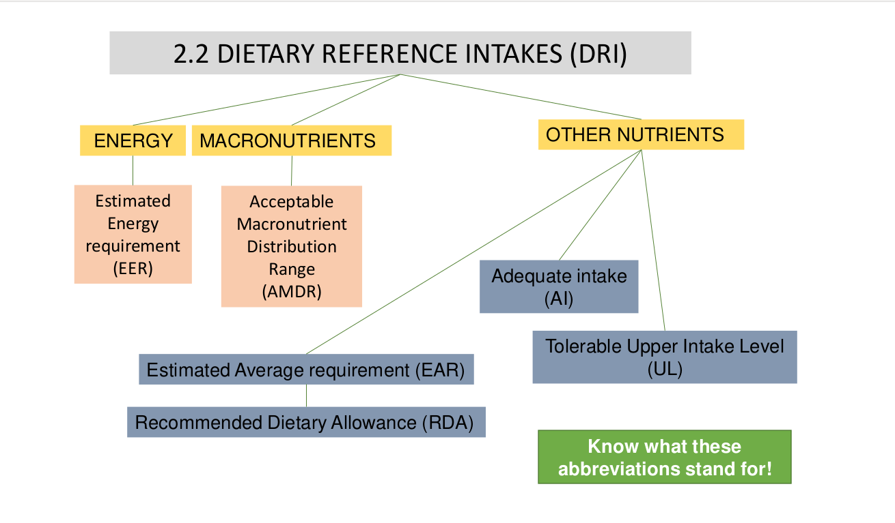
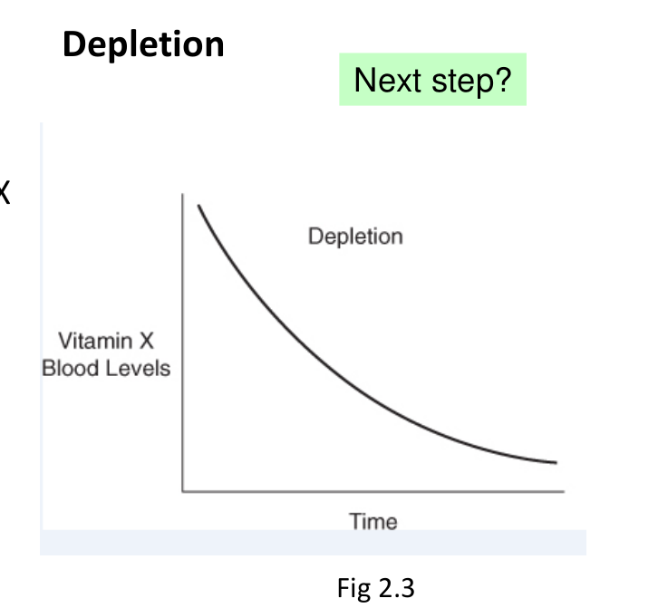
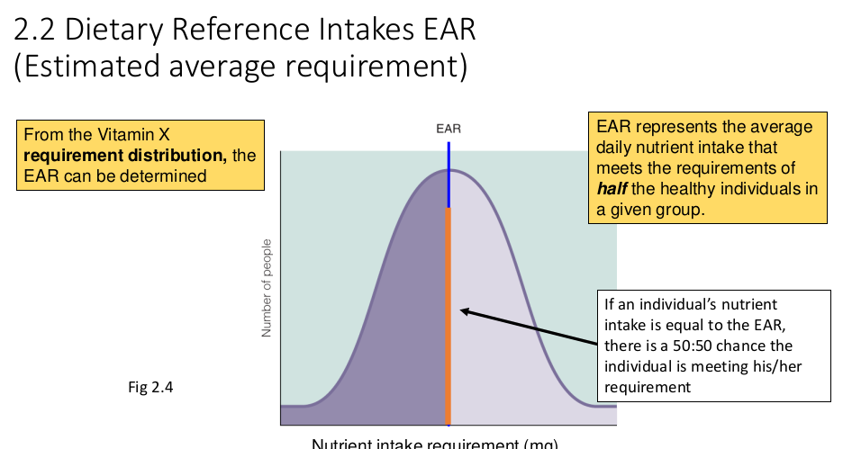
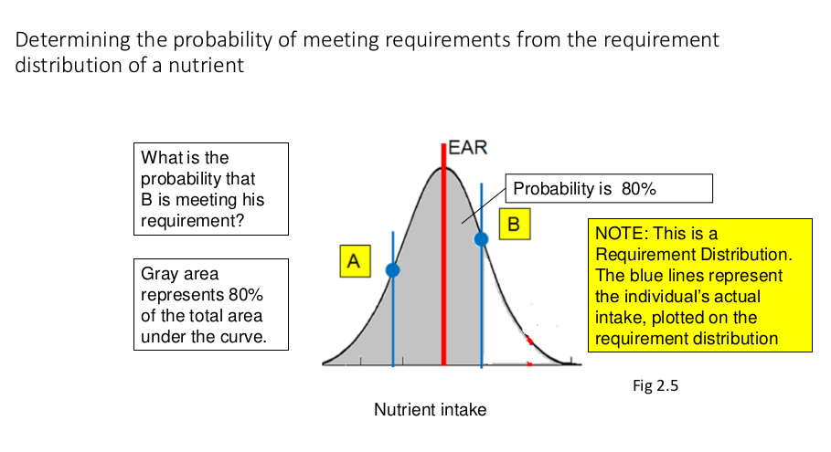
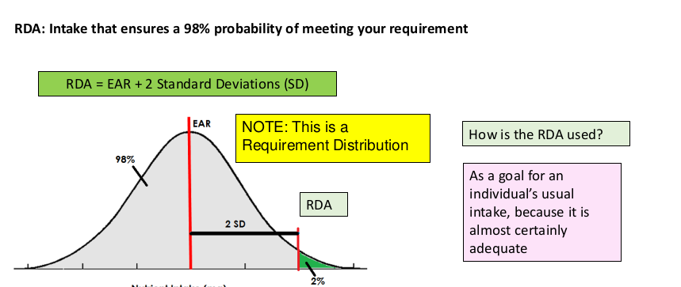
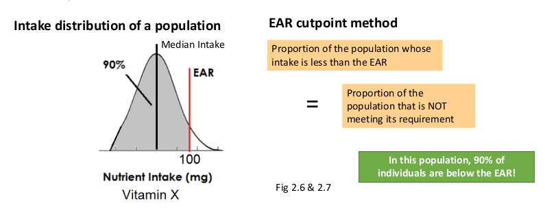
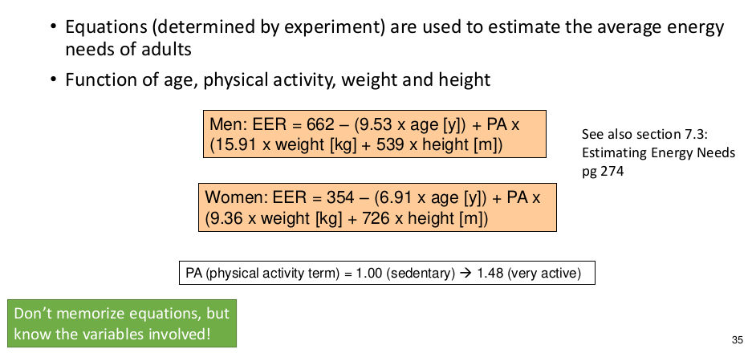

Chapter 2: Nutrition Guidelines
-
Nutrient-based approach: how much of a nutrient is required to maintain health.
-
Food-based approach: types and amounts of foods to maintain health
Dietary Reference Intake(DRI)
-
For planning and assessing diets of healthyi ndividuals.
-
Values for different life stages and males or females: infants, children, teens, young, middle, older adults, pregnancy/lactation.

Statistics
Estimated Average Requirement(EAR): Nutrient intake that meets requirement of 50% of individuals in a group.
-
used to estimate probability that an individual's usual intake is meeting their requirement
-
estimate what proportion of a group is meeting their requirement
-
Determined by selecting a biochemical/physiological criterion that allows you to determine the intake at which an individual's requirement is being met
-
e.g Consider Hypothetical Vitamin X. Vitamin X requirement is met when the level of Vitamin X in serum reaches saturation
Depletion-Repletion experiment
Depletion
-
Feed a vitamin X-free(i.e no vitamin in this diet) diet
-
Track level of vitamin X in blood
-
Eventually levels decline until no vitamin X is detected( the individual is deficient)

Repletion
-
Begin by re-feeding vitamin X
-
What happens?
-
Blod levels of vitamin X begins to rise
-
Eventually each individual reaches an intake where there is no corresponding rise in blood levels(blood is saturated with vitamin X)
-
That intake(where vitamin X concentration stops rising, i.e you reach saturation) is the individual vitamin X requirement
Probability Individuals are meeting their requirements based on the requirement distribution
Normal Distribution: EAR = 100 mg
100 mg is an estimated Average Requirement, i.e the intake level that meets requirements of 50% of subjects.
-
Nutrient intake: amount of nutrient consumed, determined by composition of the diet.
-
Nutrient requirement: experimentally-determined amount required of nutrient to maintain health.
-
Can determine EAR from Vitamin X requirement distribution. EAR represents the average daily nutrient intake that meets the requirements of half the healthy individuals in given group.


Area under the curve for a specific individual is the probability that he is meeting the EAR
Recommended Dietary Allowance(RDA)
RDA: EAR + 2 Standard Deviations.. Esnures 98% probability of meeting your requirement. It is a goal for an individual's usual intake, because it's almost certainly adequate..

Probability proportions of a population are meeting their requirements based on the requirement distribution
EAR cut point method: estimates what proportion of a group is meeting their nutrient requirement.

Health Canada Considers a population to have an adequate intake if proportion of population whose intake is below EAR is 10% or less.
Adequate intake - Insufficient data to calculate an EAR. Based on estimate of average nutrient intake by healthy population.
-
Example: Recommendations for calcium intake for young infants(0-6 months) = 200mg. Adequate intake: 200mg
-
If your intake > AI, then intake OK. If intake < AI, intake may or may not be OK****
Tolerable Upper Intake Level (UL)
Tolerable Upper Intale Level(UL) Highest level of habitual nutrient intake that is unlikely to pose risk of adverse effect. If UL = 1 g then you can consume 1 g of nutrient daily without adverse effect.
UL is not a recommended level of intake. No additional benefit above RDA.
Energy Balance
-
IF Energy content of food consumer > energy content expanded for metabolism & physical activity \rightarrow weight gain
-
IF energy content of food consumed = energy content expended for metabolism \rightarrow weight is unchanged
-
IF energy content of food consumed < energy content expended for metabolism \rightarrow weight loss

Know how to use the formula!